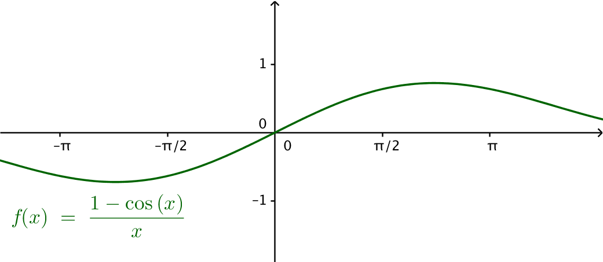

12. Härledning av deriverinsformel för sinus och cosinus
Detta kapitel är fördjupning och behandlar härledningen för deriveringsformlerna för sinus och cosinus.
Vi visar att \( D \sin x = \cos x \).
Vi arbetar med definitionen av derivatafunktionen, \( f'(x)=\lim_{h \to 0}\dfrac{f(x+h)-f(x)}{h} \).
Derivatan av \( D\sin x = \lim_{h \to 0} \dfrac{\sin(x+h) -\sin x}{h}. \)
Summaformeln för \( \sin(x+y) = \sin x \cos y + \cos x \sin y \). Vi får att \( D\sin x = \lim_{h\to 0} = \dfrac{[\sin x \cos h + \cos x \sin h]-\sin x}{h}. \)
Vi ordnar termerna och får: \( \lim_{h\to 0} = \dfrac{\cos x \sin h- \sin x+ \sin x \cos h}{h}. \)
Vi fortsätter med att bryta ut \( \lim_{h\to 0} = \dfrac{\cos x \sin h- \sin x(1- \cos h)}{h}. \)
Sedan delar vi upp gränsvärdet, \( \cos x\lim_{h\to 0}\dfrac{ \sin h}{h} -\sin x \lim_{h\to 0}\dfrac{(1- \cos h)}{h} \).
Till nästa tar vi och studerar gränsvärdena. \( \lim_{h\to 0}\dfrac{\sin h}{h} \) närmar sig 1

och \( \lim_{h \to 0}\dfrac{1-\cos x}{x} \) närmar sig 0.

Vi får att \( = \cos x\cdot 1 -\sin x \cdot 0. \)
Alltså \( D\sin x = \cos x \).
För \( D\cos x = -\sin x \) kan vi göra exakt som ovan, det kan du göra i första uppgiften, eller så kan du derivera \( \cos x \) genom att använda dig av kedjeregeln, andra uppgiften.
Uppgifter
- Härled \( D\cos x = -\sin x \) på motsvarande sätt som gjordes gjorde ovan.
Vi visar att \( D\cos x = -\sin x \).
\( \begin{array}{rcl} D\cos x & = & \lim_{h \to 0} \dfrac{\cos(x+h)-\cos x}{h} \\ & = & \lim_{h \to 0} \dfrac{\cos x \cos h-\sin x \sin h -\cos x }{h} \\ & = & \lim_{h \to 0} \dfrac{\cos x(\cos h -1)-\sin x \sin h}{h} \\ & = & \cos x \lim_{h \to 0} \dfrac{-1 + \cos h}{h} -\sin x \lim_{h \to 0 }\dfrac{\sin h}{h} \\ & = & \cos x \cdot 0 -\sin x \cdot 1 \\ & = & -\sin x \\ \end{array} \)
- Visa att \( D\cos x = -\sin x \) genom att utnyttja deriveringsregeln för en sammansatt funktion.
Vi vet att \( \cos x = \sin (x +\dfrac{\pi}{2}) \). Vi tar derivatan av bägge sidorna och får \( D\cos x = D\sin (x+\dfrac{\pi}{2}) \) och tillämpar deriveringsregeln för en sammansatt funktion, \( D\sin (x+\dfrac{\pi}{2}) = D\sin (x+\dfrac{\pi}{2}) \cdot D (x+\dfrac{\pi}{2}) = \cos (x + \dfrac{\pi}{2}) \cdot 1 \). Alltså \( D\cos x = \cos (x+\dfrac{\pi}{2}) = -\sin x \).